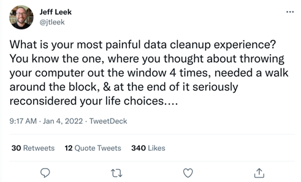
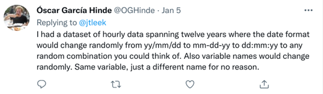
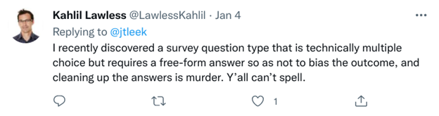
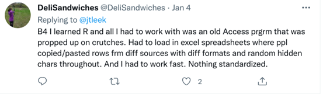

A Synthesis of Data Management Issues
By Crystal Lewis in tips
February 23, 2022
Everyone who works with data has experienced data management difficulties. While it is a pain in the moment to work through those issues, it is refreshing to know that you are never alone. This is evident from the several meetups that have even been started just to commiserate around shared data mishap experiences. Take for instance the Second Annual Data Mishaps Night occurring next Thursday February 24th, or the Be Afraid, Be Very Afraid: Data Management Horror Stories and Lessons Learned sharing session occurring at the COS: Unconference next Friday, February 25th.
And while sharing data mishaps or horror stories is very therapeutic and fun, it also provides an opportunity for us to learn from each other.
A month ago, Jeff Leek posted a question on Twitter: What is your most painful data cleanup experience?

I decided to synthesize the themes brought up in this thread and to brainstorm some possible solutions. Four common themes I saw throughout this thread were standardization, interoperability, automation, and documentation.
Standardization
This theme generally encompasses bringing data together in a consistent format that allows collaboration and reproducibility. This could be standardization of variable names, column values, file types, variable formats, file names, and more. Jesse Mostipak provided a very digestible incident of lack of standardization in a K-12 education dataset, where the meaning of the categories of a variable changed across time, rendering the dataset difficult to interpret.
Oscar Garcia Hinde provided another example of a dataset with multiple issues with standardization:

While standardization in some instances can be tricky (ex: multiple users creating data, software issues, ongoing data updates), there are some very simple measures that can be taken to ensure your data is more accessible including:
- Consistent variable naming across files and time
- Versioning of variable names
- If a state test is now scored differently than previous years, it should be given a new variable name to reduce confusion
- Standardization of data categories across files and time
- If the IDEA category was a 2 digit numeric variable last year, it should not be a 4 letter character variable this year
- If a date format is YYYY-MM-DD one year, keep it the same format across time
- Standardization of data format across time
- Same file format, headers, and number of columns (unless new data is collected) across time
Interoperability
As defined in the FAIR principles, “the data need to interoperate with applications or workflows for analysis, storage, and processing”. Several people mentioned receiving data in an inaccessible format such as a PDF. I think Suzanne Dahlberg may have my favorite response with having a dataset “faxed” to her.
While there are many ways to access data, in most use cases, accessing data in a machine-readable rectangular, tidy format that follows data organization in spreadsheet guidelines is usually ideal.
Automation
Here responses refer to both automation of the data entry process as well as the data cleaning process. Lack of automation in the data entry process means there are hand entered values, whether that means the entire dataset is hand entered, or just certain questions allow manual entry.

While manual entry is sometimes actually very important in allowing us to capture the full information of a variable (ex: an open-ended demographics question), there are times when it may be better for us to provide limited input values that a user selects from. This not only reduces errors in data entry but also reduces the headaches that may come along with having to recategorize values later on.
Lack of automation also refers to the data cleaning process as well. As much as possible, all data manipulation should be done through programming. This allows your work to be reproducible and reduces errors. Take for instance, this example where someone encountered data that had been hand merged.

Documentation
If I had to pick one of the most worrisome data management problems to encounter, but also one that, if remedied, provides the most relief of data management headaches, it’s documentation. A dataset with the gnarliest of problems can at least begin to be interpreted by a user as long as someone has created thorough documentation. And a beautiful standardized dataset that checks all the boxes, is still somewhat useless with no documentation.
Metadata that documents the who, what, where, when and why of the project, the data and the variables is key to data being used and interpreted correctly. Data dictionaries, codebooks, and READMEs are all guaranteed ways to improve data management.
In summary, while we cannot always control how we receive data, sharing lessons learned with data producers is still a worthwhile endeavor. It may help others implement better data curation practices. And sometimes that data producer who we are so frustrated with, turns out to be our past or future selves!
- Posted on:
- February 23, 2022
- Length:
- 4 minute read, 794 words
- Categories:
- tips
- Tags:
- data management